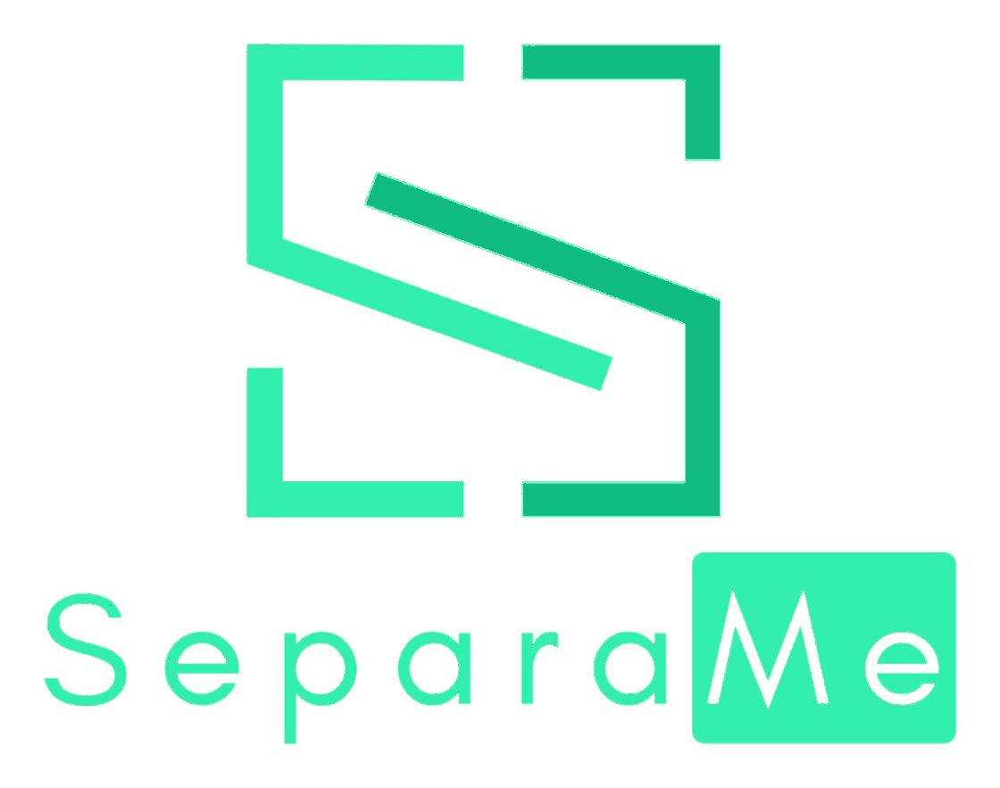

Design system · versão 1 · novembro de 2026
Separe suas finanças.
Multiplique suas possibilidades.
Guia da marca, tokens nos modos claro e escuro, 15 componentes e o escopo do protótipo do SeparaMe: gestão financeira para microempresas, com o dia a dia pelo WhatsApp.
Baixar o PDFTokens para o FigmaTokens em CSS
Guia da marca
O SeparaMe é um aplicativo de gestão financeira para microempresas (ME) prestadoras de serviço, no Simples Nacional, com o dono à frente do financeiro. Ele separa o dinheiro da empresa do dinheiro pessoal, mostra o que sobra de verdade depois dos compromissos e dos tributos, e deixa registrar o dia a dia mandando mensagem no WhatsApp. O produto está em fase de protótipo: tudo aqui serve para a equipe montar o protótipo navegável (web e app) e para as peças de comunicação, como os vídeos.
Leia também as seções Funcionalidades e telas (o escopo) e Tributos e reforma tributária (o diferencial).
Conteúdo e voz
O SeparaMe fala como um bom contador que é também seu amigo: claro, calmo e direto, sem jargão sem explicação.
- Trate a pessoa por você. Frases curtas, voz ativa, sem ponto de exclamação e sem emoji.
- Diga o que aconteceu e o que fazer: "Despesa registrada", "O CNPJ tem 14 dígitos. Faltam 2.", "Reconecte o WhatsApp em Configurações para voltar a lançar por mensagem."
- Use os nomes que o dono da empresa reconhece: Empresa e Pessoal (PJ e PF só como apoio), lançamento, a pagar e a receber, previsto e realizado, aporte e retirada, reserva de tributos, sobra de verdade.
- Nunca prometa o que o produto não garante. Tributo calculado pelo app é sempre simulação ou estimativa; valor oficial é "informado pelo contador" ou "da apuração oficial". Não escreva "economize impostos" nem "evite multas".
- Datas em dd/mm (dd/mm/aaaa quando o ano importa); dinheiro sempre como
Money: + R$ 1.200,00, − R$ 350,00. - Botões começam com verbo: "Registrar despesa", "Importar extrato", "Conectar WhatsApp".
- Vazios explicam o próximo passo: "Nenhum lançamento em novembro. Mande uma mensagem para o SeparaMe no WhatsApp ou registre aqui."
O slogan da marca é "Separe suas finanças. Multiplique suas possibilidades." Use-o só em tela de abertura, assinatura de vídeo e materiais de divulgação, nunca dentro do fluxo do produto.
Fundamentos visuais
Cor
A marca vem do logo: navy (#000B3D), mint (#31EEAE) e emerald (#0FBB81).
navy é a cor da casa: menu lateral do web, cabeçalho do app, card de destaque. Sobre ele, texto on-navy e itens inativos em on-navy-muted.mint é a ação e o destaque: botão principal (texto on-mint), item ativo do menu, o valor da sobra de verdade sobre navy. Nunca use mint como texto sobre fundo claro: para verde em texto use accent-text.emerald é só marca (logo, ilustração sobre navy). Em gráficos, a série realizado usa income.- A área de trabalho é
canvas; cards, tabelas e painéis ficam em surface; cabeçalhos de tabela e poços de campo em surface-sunken; divisórias em line; bordas de controle em line-strong. - Texto principal em
ink, secundário em ink-muted. Os dois passam 4,5:1 sobre canvas, surface e surface-sunken nos dois modos.
Os dois ambientes
Empresa e Pessoal são espaços separados, e a cor diz onde a pessoa está.
- Empresa:
env-empresa sobre env-empresa-soft. Pessoal: env-pessoal sobre env-pessoal-soft. - A cor do ambiente aparece no
SpaceSwitcher, no título da tela e no ponto de cada lançamento. Não pinte a tela inteira com ela. - Aporte (Pessoal → Empresa) e retirada (Empresa → Pessoal) são as únicas pontes, e nunca contam como receita ou despesa.
Dinheiro, situações e gráficos
- Entrada:
income, com + e seta para cima. Saída: expense, com − e seta para baixo. Previsto: forecast. Tributos: reserve. Saldos e totais: ink. A cor nunca é a única pista: sinal, seta ou rótulo sempre acompanham. - Situações usam
StatusBadge: pago e conciliado em income sobre success-soft; a vencer em warning sobre warning-soft; vencido em danger sobre danger-soft; reserva em reserve sobre reserve-soft. - Gráficos: realizado em linha cheia
income, previsto tracejado forecast, linha pontilhada em "hoje", grade em line, rótulos em ink-muted com valores abreviados ("R$ 15 mil").
Tipografia
Uma família só, Manrope (Google Fonts, licença OFL), do título ao rótulo, carregada pelos pesos 400 a 800.
- Grupo Interface:
display (título de tela no web), title (título no app e em modais), heading (título de card), body e body-strong (texto e itens), small (dicas e metadados), label (rótulos de KPI e cabeçalhos de tabela, em maiúsculas). - Grupo Valores:
figure-xl para o número principal da tela, figure-lg para KPIs e totais, figure para tabelas. Todo valor usa algarismos tabulares (font-variant-numeric: tabular-nums), para as colunas alinharem.
Espaço, forma e profundidade
- Grade de 4 px:
space-1 a space-8. No web, cards com space-5 por dentro e entre si e margem de conteúdo space-6; no app, space-4. - Cantos:
radius-sm em botões, campos e menu; radius-md em cards, tabelas, gráficos e balões; radius-lg em modais e folhas do app; radius-pill em selos e no seletor de ambiente. - Sombras discretas:
shadow-card em cards sobre canvas, shadow-pop no que flutua (toast, menus). No modo escuro a separação vem do contorno.
Modos claro e escuro
Todo token tem valor nos dois modos, e o claro é o padrão. No escuro, canvas e surface viram azuis profundos, accent-text vira mint e os tons de situação clareiam para manter o contraste. navy e mint não mudam: são a assinatura da marca. Teste toda tela nos dois modos.
Foco e acessibilidade
- Foco do teclado: anel sólido de 2 px em
focus, com 2 px de afastamento; dentro do menu e de áreas navy, em focus-on-navy. - Texto passa 4,5:1 sobre seus fundos nos dois modos; bordas de controle, ícones e anéis de foco passam 3:1.
- Alvos de toque de pelo menos 44 px no app. Rótulo sempre visível nos campos e na barra do app.
Movimento
Movimento confirma o que aconteceu, nunca enfeita. Entradas de 200 a 300 ms com desaceleração; toasts sobem 8 px enquanto aparecem; valores que mudam contam até o número novo em até 600 ms. Respeite prefers-reduced-motion. Nas peças de vídeo vale mais: zoom e inclinação suaves sobre a tela, cursor que clica, toast de confirmação.
Iconografia
Ícones de traço, 24 px de grade, traço de 2 px, pontas arredondadas, na cor do texto ao lado (currentColor). Para o protótipo, use o conjunto Lucide (código aberto, licença ISC, com plugin para Figma). Os ícones dentro destes componentes são substitutos desenhados no mesmo estilo, até a equipe adotar o Lucide. Sem emoji na interface.
Plataformas e layout
- Web (painel de gestão): menu lateral fixo de 248 px (
SidebarNav), conteúdo com no máximo 1200 px, grade de 12 colunas. Pensado para 1440 × 900 e utilizável a partir de 1024 px. - App (dia a dia): projetado em 390 × 844, barra inferior (
TabBar) com Lançar no centro. Uma coluna, cards de largura total. - WhatsApp (bot): conversa em texto. As telas de demonstração usam
ChatBubble com as cores do SeparaMe.
Logo
Use os arquivos do grupo Logos, todos saídos do logo enviado pela equipe. Nunca redesenhe, recolora ou distorça.
- Logo completo (
separame-logo.png ou separame-logo-transparente.png): telas de abertura, capa, assinatura de vídeo, cabeçalho do app. - Nome (
separame-nome.png): menu lateral do web, a 32 px de altura (SidebarNav recebe em logoSrc). - Símbolo (
separame-simbolo.png): ícone do app, avatar do bot no WhatsApp, favicon e espaços abaixo de 48 px. - Sempre sobre
navy (ou navy-block no modo escuro), com respiro mínimo igual à altura do "Me" em volta. A arte é mint e emerald, e o "Me" tem as letras vazadas: sobre fundo claro ela perde contraste. Uma versão para fundo claro ainda precisa ser criada pela equipe.
Cores
Cada amostra mostra o modo claro à esquerda e o escuro à direita. Todos os pares de texto e fundo foram verificados: 4,5:1 para texto, 3:1 para bordas, ícones e foco.
Tipografia
Interface
Manrope (Google Fonts, licença OFL) em todo o produto. Pesos 400, 500, 600, 700 e 800.
Quanto sobra de verdade
display 32px / 40px · peso 800 · espaçamento -0.02em
Título da tela no web; um por tela.
Fluxo de caixa
title 24px / 32px · peso 700 · espaçamento -0.01em
Título da tela no app e de modais.
Próximos vencimentos
heading 18px / 26px · peso 700
Título de card e de seção.
Registre receitas e despesas pelo WhatsApp.
body 15px / 22px · peso 400
Texto corrido e células de tabela.
Aluguel do escritório
body-strong 15px / 22px · peso 600
Descrição de lançamento, item de lista.
Informado pelo contador em 05/11
small 13px / 18px · peso 500
Dicas de campo, metadados, notas de rodapé de card.
ENTRADAS DO MÊS
label 12px / 16px · peso 700 · espaçamento 0.06em
Rótulo de KPI e cabeçalho de tabela, sempre em maiúsculas.
Valores
Todo valor em dinheiro usa algarismos tabulares (font-variant-numeric: tabular-nums), sinal e R$.
R$ 6.320,50
figure-xl 32px / 38px · peso 800 · espaçamento -0.02em
O número principal da tela: sobra de verdade, saldo livre.
+ R$ 18.420,00
figure-lg 24px / 30px · peso 700 · espaçamento -0.01em
Valor de KPI e total de card.
− R$ 350,00
figure 15px / 22px · peso 600
Valores em tabela e lista.
Espaço, cantos e sombras
Espaço
space-14px · Ícone e texto colados; espaço interno de selo.
space-28px · Entre ícone e rótulo; entre balões da conversa.
space-312px · Espaço interno de campo e de item de menu.
space-416px · Espaço interno de card no app; vão entre cards no app.
space-524px · Espaço interno de card no web; vão entre cards no web.
space-632px · Margem da área de conteúdo no web.
space-748px · Separação entre seções de uma tela longa.
space-864px · Respiro de telas vazias e de onboarding.
Cantos
radius-xs4pxEtiqueta de origem e cauda do balão de conversa.
radius-sm8pxBotões, campos, itens de menu, avisos.
radius-md12pxCards, tabelas, gráficos, toasts, balões.
radius-lg20pxModais e folhas inferiores do app.
radius-pill999pxSelos de situação, seletor Empresa/Pessoal, barra de progresso.
Sombras
shadow-cardCards, tabelas e gráficos sobre canvas.
shadow-popToast, menu suspenso, botão de lançar da barra do app.
Componentes
Componentes em React 18 (assets/bundle.js, objeto global SeparaMe) com o estilo em assets/bundle.css. As prévias abaixo são os componentes reais, funcionando; troque o modo no menu para vê-los no escuro.
Um botão primary por tela, para a ação que justifica a tela; o resto é secondary ou ghost.
- primary — fundo
mint, texto on-mint. "Novo lançamento", "Salvar reserva", "Conectar WhatsApp". - secondary — fundo
surface, borda line-strong. Ações de apoio: "Importar extrato", "Exportar". - ghost — texto
accent-text, sem fundo. Navegação dentro do card: "Ver todos". - danger — borda e texto
danger. Só para excluir ou desconectar, sempre com confirmação na própria tela.
O rótulo começa com verbo e diz o resultado: "Registrar despesa", nunca "OK" ou "Enviar". Ícone à esquerda só quando ajuda a reconhecer a ação (plus para criar, upload para importar). Tamanho sm em tabelas e cabeçalhos de card. Quem usa fornece children (o rótulo) e o onClick.
Campo de texto com rótulo sempre visível acima; o placeholder só mostra o formato, nunca substitui o rótulo.
- Valores em dinheiro usam
prefix="R$" e inputMode="decimal": o campo já aplica algarismos tabulares. - A dica (
hint) diz o formato esperado. O erro (error) diz o que está errado e como corrigir: "O CNPJ tem 14 dígitos. Faltam 2.", nunca "Campo inválido". - Borda
line-strong (3:1); erro troca a borda por danger e mostra o ícone, para não depender só da cor. - Quem usa fornece
label, o estado (value + onChange, ou defaultValue) e a validação.
Troca entre os ambientes Empresa e Pessoal: é o conceito central do produto e fica sempre visível no topo da tela.
- Empresa usa
env-empresa (verde); Pessoal usa env-pessoal (azul). A cor do ambiente ativo se repete no título da tela e no ponto colorido de cada lançamento, para a pessoa nunca ter dúvida de onde está. - Os nomes na interface são "Empresa" e "Pessoal". "PJ" e "PF" podem aparecer como apoio em relatórios, nunca sozinhos.
- Trocar de ambiente não apaga filtros nem rascunhos. Aportes e retiradas são a única ponte entre os dois e aparecem nos dois lados.
- Quem usa fornece o ambiente atual (
value) e o onChange.
Barra inferior do app: cinco destinos, com "Lançar" no centro como o botão de maior destaque.
- Ordem fixa: Início, Contas, Lançar, Tributos, Mais. Lançar abre a folha de novo lançamento (manual, foto do comprovante ou "mandar pelo WhatsApp").
- O item ativo usa
accent-text; os outros, ink-muted. Rótulo sempre visível, nunca só ícone. - Quem usa fornece os itens e o ativo; a barra respeita a área segura do aparelho.
Indicador da Visão geral: rótulo em maiúsculas, um valor e uma linha que explica de onde ele vem.
- No máximo um card
emphasis por tela, em navy com o valor em mint: é a sobra de verdade (saldo da empresa menos contas a pagar do período e reserva tributária). É a resposta à pergunta do produto, "quanto posso usar sem comprometer o caixa". - Entradas em
income, com sinal +; saídas em expense, com sinal −. A linha de dica (hint) diz a conta por trás do número. - Quatro cards por linha no web; dois no app, com a sobra de verdade ocupando a linha inteira.
- Quem usa fornece
label, value (número em reais), kind e hint.
Todo valor em reais da interface passa por este componente: formato brasileiro, algarismos tabulares, sinal e cor pelo tipo.
- Entrada:
+ R$ 1.200,00 em income. Saída: − R$ 350,00 em expense (o sinal é o menos tipográfico −, não o hífen). Previsto: forecast. Reserva tributária: reserve. Saldos e totais neutros: ink, sem sinal. - A cor nunca é a única pista: entrada e saída levam sempre o sinal, e em listas também a seta (
arrow). - Nunca arredonde centavos na tela de detalhe. Em eixos de gráfico, abrevie: "R$ 15 mil".
- Quem usa fornece
value em reais (negativo para saída) e, se precisar, kind e size.
Situação de uma conta ou lançamento, em uma ou duas palavras, sempre com ícone.
| situação | quando | cor |
|---|
| Pago / Recebido / Conciliado | o dinheiro já se moveu | income sobre success-soft |
| A vencer | vence em até 7 dias | warning sobre warning-soft |
| Vencido | passou da data | danger sobre danger-soft |
| Previsto | compromisso futuro, ainda não realizado | forecast sobre surface-sunken |
| A conciliar | veio do extrato e não casou com nenhum lançamento | ink-muted sobre surface-sunken |
| Reserva | valor separado para tributos | reserve sobre reserve-soft |
Quem usa fornece status; children substitui o texto quando precisar de algo mais específico ("Vence amanhã").
De onde veio o lançamento: WhatsApp, Extrato importado, Manual ou Recorrente.
- Aparece em toda linha de lançamento e no histórico. É o que prova o diferencial: o que foi mandado no WhatsApp aparece no app, marcado como tal.
- WhatsApp usa
accent-text; as outras origens ficam neutras (ink-muted), para o destaque não competir com os valores. - Quem usa fornece
source.
Lista de lançamentos do web: data, descrição, categoria, origem, situação e valor alinhado à direita.
- O ponto antes da descrição mostra o ambiente (
env-empresa ou env-pessoal). - Aportes e retiradas aparecem com
kind: 'neutral': movem dinheiro entre os ambientes, mas não são receita nem despesa. A categoria diz "Aporte" ou "Retirada". - Linhas vindas do extrato que ainda não casaram com nenhum lançamento ficam "A conciliar" até a pessoa confirmar.
- No app, a mesma informação vira uma lista de duas linhas por item (descrição e valor em cima; categoria, origem e data embaixo).
- Quem usa fornece as linhas; ordenação, filtros e paginação ficam na tela.
Saldo da empresa mês a mês: realizado em linha cheia (income) até hoje, previsto em linha tracejada (forecast) depois.
- A linha vertical pontilhada marca "hoje"; o ponto destacado é o último valor realizado.
- O previsto soma o que já está cadastrado em contas a pagar e a receber e as recorrências. Nunca é estimativa de vendas.
- Eixo em reais abreviados ("R$ 15 mil"); o valor exato aparece ao passar o cursor (web) ou tocar (app).
- Quem usa fornece
data com label, realized (até hoje) e forecast (a partir do mês atual, repetindo o último realizado para a linha se ligar).
O diferencial tributário do produto: quanto da sobra precisa ficar guardado para os tributos, e de onde vem cada valor.
- Cor própria,
reserve (dourado), para tributos não se misturarem com entradas e saídas. - Cada linha diz a origem do valor: "Valor informado pelo contador", "Da apuração oficial" ou "Simulação". Simulação nunca aparece como valor a pagar.
- A barra mostra quanto já foi separado no planejamento em relação ao total.
- O aviso de rodapé é obrigatório: a reserva é gerencial, não bloqueia dinheiro no banco e não substitui a guia oficial. Só desligue (
disclaimer: false) quando a tela já mostrar esse aviso por perto. - Quem usa fornece
period, reserved, target e os items.
Aviso fixo dentro da tela: explica um limite, pede uma ação ou registra um problema.
reserve para avisos tributários e regulatórios (estimativas, regras que mudaram). warning para pendências. danger para algo que parou de funcionar. info para orientação neutra. success para confirmações que precisam ficar na tela.- Título curto que diz o fato; corpo com o que fazer. Sem pedir desculpas, sem ponto de exclamação.
- Para confirmações passageiras, use
Toast. - Quem usa fornece
tone, title e o texto.
Confirmação passageira de uma ação, no canto inferior direito do web e no topo do app; some em 5 segundos.
- O título diz o que aconteceu, no passado: "Despesa registrada", "Extrato importado". A mensagem traz o valor e o ambiente.
- Ação opcional à direita, de uma palavra: "Desfazer", "Revisar".
- Erros que exigem ação não usam toast: usam
Notice na própria tela. - Quem usa fornece
tone, title, message e, se houver, action com onAction.
Balão da conversa com o bot do SeparaMe no WhatsApp, para as telas de demonstração, o onboarding e o vídeo.
- Usuário à direita (
chat-user), bot à esquerda (chat-bot), sobre chat-bg. As cores são do SeparaMe, não as do WhatsApp: o nome do aplicativo aparece em texto, e o logo oficial do WhatsApp não é usado. - Toda resposta do bot que registra algo começa com um título de confirmação ("Receita registrada") e repete o que entendeu: ambiente, categoria e valor. Assim a pessoa corrige na hora se o bot errou.
- O bot fala como o produto: frases curtas, sem gírias, sem emoji.
- Quem usa fornece
from, time, o title (respostas do bot) e o conteúdo.
Logos
Todos saem do logo enviado pela equipe; os três últimos são recortes dele, com o fundo navy removido. Nenhum foi redesenhado. Use sempre sobre navy ou navy-block: a arte é mint e emerald, e o "Me" tem as letras vazadas.
separame-logo.png — logo principal, 1600 × 1600 px, com o fundo navy (#000B3D). Para avatar, perfil em redes e telas de abertura.separame-logo-transparente.png — o mesmo logo, sem o fundo, para pousar sobre navy ou navy-block (capa, assinatura de vídeo, cabeçalho do app).separame-simbolo.png — só a marca em S entre colchetes, sem o fundo. Para o ícone do app, o avatar do bot no WhatsApp e espaços pequenos.separame-nome.png — só o nome "Separa" + "Me", sem o fundo. Para o menu lateral do web (32 px de altura) e rodapés.
Funcionalidades e telas
O escopo do protótipo, a partir da apresentação do grupo (Economia da Informação, Inovação e Negócios Disruptivos) e do bot no WhatsApp. Tudo aqui é hipótese a validar com microempresários e contadores.
Público: microempresas (ME, não MEI) prestadoras de serviço, optantes pelo Simples Nacional, com o dono cuidando do financeiro. Contadores entram como parceiros e como leitores autorizados.
A promessa: mostrar o que sobra de verdade. Saldo positivo não significa dinheiro disponível para retirar.
Funcionalidades
Protótipo = entra no protótipo navegável. Depois = só depois dos testes com usuários.
| # | Funcionalidade | O que faz | Fase |
|---|
| 1 | Ambientes separados | Empresa e Pessoal em espaços distintos, com seletor sempre visível. | Protótipo |
| 2 | Lançamentos | Registro manual, importação de extrato (OFX ou CSV) e lançamento pelo WhatsApp; categoria e origem em cada um. | Protótipo |
| 3 | Bot no WhatsApp | Registrar receita ou despesa por texto, confirmar o que entendeu, consultar o que vence e a sobra de verdade, receber lembretes. | Protótipo |
| 4 | A pagar e a receber | Contas, compromissos e recebimentos esperados, com vencimento, recorrência e situação. | Protótipo |
| 5 | Conciliação assistida | O extrato importado é comparado com os lançamentos e as contas; o app sugere o par, a pessoa confirma. | Protótipo |
| 6 | Fluxo de caixa | Previsto e realizado lado a lado, por mês e por dia. | Protótipo |
| 7 | Sobra de verdade | Saldo da empresa menos contas a pagar do período e reserva de tributos. | Protótipo |
| 8 | Aportes e retiradas | Transferências entre os ambientes identificadas; não viram receita nem despesa. | Protótipo |
| 9 | Reserva de tributos | DAS informado pelo contador ou da apuração oficial, guardado no planejamento. Ver Tributos e reforma tributária. | Protótipo |
| 10 | Simulador da reforma | Cenários de IBS e CBS a partir de 2027: continuar no Simples ou recolher por fora. Ver Tributos e reforma tributária. | Protótipo |
| 11 | Alertas de vencimento | Contas e tributos perto de vencer, no app, no WhatsApp e por e-mail. | Protótipo |
| 12 | Relatórios simples | Despesas por categoria, previsto × realizado, exportação em PDF e planilha. | Protótipo |
| 13 | Acesso do contador | Convite com autorização do dono; leitura dos lançamentos e relatórios. | Protótipo |
| 14 | Assinatura | Planos Essencial e Gestão+, mensal ou anual, com período de teste. O que entra em cada plano, inclusive o bot, está a definir. | Protótipo (tela) |
| 15 | Segurança | Controle de acesso, verificação em duas etapas, cópias de segurança, consentimento (LGPD). | Protótipo (telas) |
| 16 | Integração bancária | Extrato automático via Open Finance. Depende de custo, consentimento e requisitos técnicos. | Depois |
| 17 | Comprovante por foto | Mandar a foto do comprovante no WhatsApp ou no app e o lançamento ser sugerido. | Depois |
Telas do web (painel de gestão)
| Tela | Conteúdo principal | Componentes |
|---|
| Visão geral | Sobra de verdade (destaque), entradas e saídas do mês, a pagar em 7 dias, reserva de tributos, fluxo de caixa, próximos vencimentos, últimos lançamentos com origem. | KpiCard, CashFlowChart, TaxReserveCard, TransactionTable |
| Lançamentos | Tabela com filtros por período, ambiente, categoria, origem e situação; novo lançamento em painel lateral. | TransactionTable, SourceTag, StatusBadge, TextField |
| Importar e conciliar | Envio do extrato, lista do que casou e do que falta conciliar, confirmação item a item. | Notice, StatusBadge, Toast |
| A pagar e a receber | Lista e calendário do mês, com totais por semana. | StatusBadge, Money |
| Fluxo de caixa | Gráfico previsto × realizado, tabela mês a mês, saldo projetado. | CashFlowChart, Money |
| Aportes e retiradas | Histórico das transferências entre Empresa e Pessoal, retirada do dono no mês. | TransactionTable, SpaceSwitcher |
| Tributos e reforma | Reserva de tributos, calendário de vencimentos, simulador de IBS e CBS, regras e data de atualização. | TaxReserveCard, Notice |
| Relatórios | Despesas por categoria, previsto × realizado, exportar para o contador. | CashFlowChart, Button |
| WhatsApp | Número conectado, o que o bot entende, histórico de mensagens processadas. | ChatBubble, Notice |
| Contador | Convite, acessos ativos, o que ele pode ver. | TextField, Button |
| Configurações | Dados da empresa (CNPJ, porte, regime, atividade), categorias, notificações, plano, segurança. | TextField, Button |
Telas do app (dia a dia)
| Aba | Conteúdo |
|---|
| Início | Sobra de verdade, alertas, próximos vencimentos, últimos lançamentos. |
| Contas | A pagar e a receber da semana e do mês; marcar como pago. |
| Lançar | Folha com três caminhos: registrar aqui, foto do comprovante (depois) ou abrir o WhatsApp. |
| Tributos | Reserva de tributos, próximo vencimento, resumo do cenário da reforma. |
| Mais | Ambientes, relatórios, contador, WhatsApp, configurações. |
O bot no WhatsApp
- Registrar: "Paguei 350 de fornecedor", "Recebi 1.200 do cliente Silva no Pix". O bot responde com o que entendeu (tipo, ambiente, categoria, valor, data) e a pessoa corrige se precisar.
- Consultar: "O que vence esta semana?", "Quanto sobra este mês?", "Quanto tenho guardado para o DAS?".
- Ser lembrado: vencimentos de contas e tributos, extrato a conciliar.
- Limites: o bot não paga contas, não movimenta dinheiro e não envia guias. Se ele não entender, pergunta; não chuta.
Fluxos que o protótipo precisa cobrir
São as tarefas do teste de usabilidade da apresentação:
- Registrar uma despesa, pelo app e pelo WhatsApp, e ver que ela apareceu nos dois lugares.
- Identificar uma retirada do dono e ver que ela não virou despesa da empresa.
- Consultar a reserva de tributos e entender de onde vem cada valor.
E dois fluxos que sustentam o diferencial: conectar o WhatsApp no cadastro, e importar um extrato e conciliar.
Dados de exemplo
Para o protótipo e os vídeos, use sempre a mesma empresa fictícia, marcada como exemplo: Estúdio Lumen Ltda, ME de design gráfico no Simples Nacional, com a dona, Carla, cuidando do financeiro. Valores coerentes entre as telas: receita de R$ 1.200,00 do cliente Silva, despesa de R$ 350,00 com a gráfica, aluguel de R$ 1.800,00, contador R$ 450,00, sobra de verdade de R$ 6.320,50.
Tributos e reforma tributária
O diferencial que mais interessou à turma: o SeparaMe ajuda a microempresa a se planejar para os tributos de hoje (o DAS) e para a reforma tributária (IBS e CBS). Com a reforma, a conciliação correta das receitas fica ainda mais importante, porque é dela que saem as bases dos tributos.
O que o produto faz
- Reserva de tributos. Do que entra na empresa, uma parte fica separada no planejamento para pagar o tributo do período. Na tela aparece como reserva (
reserve), descontada da sobra de verdade. - DAS. O valor vem do contador ou da apuração oficial, e a tela diz qual foi a fonte. Antes disso, o app mostra só uma estimativa marcada como tal.
- Calendário de vencimentos. DAS e, a partir de 2027, os novos tributos, com alerta no app e no WhatsApp.
- Simulador da reforma. Para cada empresa, compara dois cenários a partir de 2027: continuar recolhendo tudo pelo Simples Nacional, ou recolher IBS e CBS por fora, no regime regular (o "Sistema Híbrido" da apresentação), o que pode interessar a quem vende para outras empresas, porque elas passam a aproveitar crédito. O resultado é uma simulação para levar ao contador, nunca uma recomendação.
- Regras atualizáveis. Alíquotas e prazos ficam numa tabela de regras com fonte e data de atualização, validada por um profissional de contabilidade. Toda tela que usa essas regras mostra quando foram atualizadas.
O que o produto não faz
- Não bloqueia nem separa dinheiro no banco: a reserva é um registro gerencial.
- Não emite guia oficial nem substitui o contador.
- Não usa percentual único para todo mundo: o cálculo depende do enquadramento e dos dados de cada empresa.
Como mostrar na interface
- Tributos têm cor própria,
reserve, para não se misturar com entradas e saídas. - Use
TaxReserveCard para a reserva, com a origem de cada valor em cada linha. - Todo número simulado vem com
Notice em tom reserve: "Estimativa, não é guia oficial. Confira com o seu contador antes de decidir." - Nunca escreva "economize impostos", "pague menos" ou "evite multas". Escreva "planeje", "simule", "confira".
Linha do tempo para as telas
Para a tela de Tributos e para o vídeo, descreva a transição em linguagem simples, com a fonte ao lado, e confira as datas com a fonte oficial antes de publicar:
- 2026: ano de teste da CBS e do IBS, com alíquotas reduzidas.
- 2027: a CBS passa a valer e substitui PIS e Cofins. Empresas do Simples Nacional podem escolher entre manter o recolhimento pelo Simples ou recolher IBS e CBS por fora.
- 2029 a 2032: o IBS entra aos poucos enquanto ICMS e ISS diminuem.
- 2033: o novo modelo completo.
Fontes de referência: Emenda Constitucional 132/2023, Lei Complementar 214/2025 e a orientação da Receita Federal sobre o Simples Nacional em 2027 citada na apresentação (gov.br, setembro de 2026).
Arquivos
| Arquivo | Para quê |
|---|
| SeparaMe-Design-System.pdf | Este design system inteiro em PDF, para ler e compartilhar. |
| tokens-studio.json | Tokens para o Figma: importe com o plugin Tokens Studio (gratuito). Conjuntos global, light e dark. |
| tokens.css | Variáveis CSS com os modos claro e escuro (data-theme), para o código do protótipo. |
| tokens.json | A fonte dos tokens, com o uso de cada um. |
| bundle.js · bundle.css · index.d.ts | Os componentes em React 18, o estilo deles e os tipos das propriedades. |